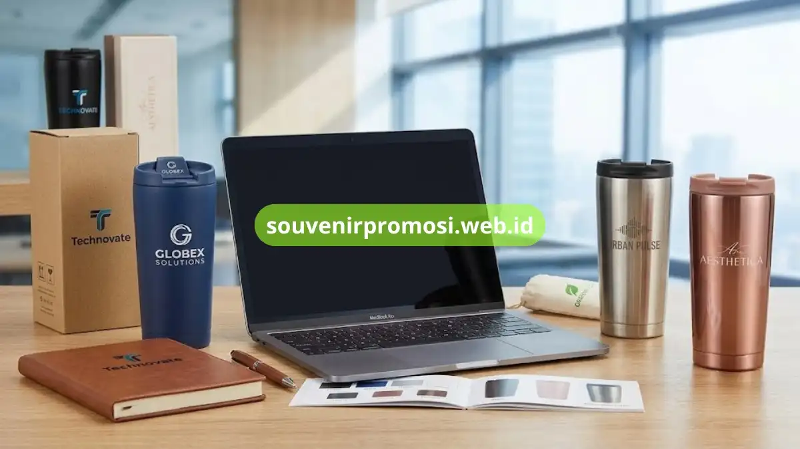

Poin Penting
- Pilihan warna tumbler memengaruhi kesan branding, seperti hitam untuk profesional dan putih untuk bersih.
- Finishing matte membuat cetakan logo kontras, sementara glossy memberikan kesan modern dan mengilap.
- Penempatan logo biasanya difokuskan di area depan badan tumbler agar identitas perusahaan mudah terlihat.
- Kombinasi warna custom pada badan dan tutup dapat diselaraskan penuh dengan identitas visual perusahaan.
- Kemasan pendukung seperti box custom atau pouch yang senada menambah kesan eksklusif souvenir promosi.
Daftar Isi
Pendahuluan
Desain dan warna tumbler custom untuk souvenir promosi memengaruhi seberapa kuat kesan branding yang diterima penerima, mulai dari pilihan finishing matte atau glossy hingga penempatan logo pada badan tumbler. Artikel ini merangkum pilihan desain dan warna yang tersedia di Souvenir Promosi untuk kebutuhan branding perusahaan.
Pilihan Warna Tumbler Custom untuk Branding Perusahaan
Warna tumbler custom umumnya tersedia dalam palet stainless polos, hitam matte, navy, abu tua, putih, dan rose gold. Pemilihan warna sebaiknya disesuaikan dengan warna identitas visual perusahaan agar souvenir promosi terasa konsisten dengan brand.
Warna gelap seperti hitam matte atau navy sering dipilih untuk kesan elegan dan profesional, sementara warna terang seperti putih atau stainless polos memberi kesan bersih dan netral yang cocok untuk berbagai jenis logo.
Finishing Matte, Glossy, dan Metalik pada Tumbler Custom
Finishing matte memberikan permukaan tidak mengilap yang membuat hasil cetak logo terlihat lebih kontras, sedangkan finishing glossy menghasilkan permukaan mengilap yang memberi kesan modern. Finishing metalik menonjolkan tekstur stainless steel secara alami tanpa lapisan warna tambahan.
Pemilihan finishing turut memengaruhi hasil akhir teknik cetak yang digunakan, sehingga sebaiknya didiskusikan bersama tim produksi sebelum menentukan desain final tumbler custom.

Penempatan Logo pada Desain Tumbler Custom
Logo perusahaan pada tumbler custom umumnya ditempatkan pada bagian depan badan tumbler dengan ukuran yang disesuaikan luas area cetak. Beberapa desain juga menempatkan logo pada tutup tumbler atau area dekat pegangan untuk model dengan pegangan tambahan.
Penempatan logo yang tepat membantu memastikan identitas perusahaan tetap terlihat jelas saat tumbler digunakan sehari-hari, baik di kantor maupun di luar ruangan.
Kombinasi Warna Custom Sesuai Identitas Brand Perusahaan
Perusahaan yang memiliki panduan warna brand tertentu dapat mendiskusikan kombinasi warna custom untuk tumbler yang dipesan. Kombinasi ini mencakup warna badan tumbler, warna tutup, hingga warna cetakan logo agar seluruh elemen visual selaras dengan identitas brand.
Konsultasikan kebutuhan kombinasi warna custom untuk tumbler souvenir promosi perusahaan Anda melalui Souvenir Promosi.
Desain Kemasan Pendukung untuk Tumbler Custom
Selain desain tumbler itu sendiri, kemasan seperti box custom atau pouch turut memengaruhi kesan keseluruhan souvenir promosi. Desain kemasan dapat mencantumkan logo dan warna korporat yang sama dengan tumbler agar tampilan tetap konsisten saat diterima penerima.
Kesimpulan
Desain dan warna tumbler custom berperan penting dalam memperkuat kesan branding souvenir promosi perusahaan, mulai dari pilihan finishing, penempatan logo, hingga kemasan pendukung. Untuk mendiskusikan konsep desain tumbler custom sesuai identitas visual perusahaan Anda, kunjungi https://souvenirpromosi.web.id/ dan hubungi tim Souvenir Promosi sekarang.